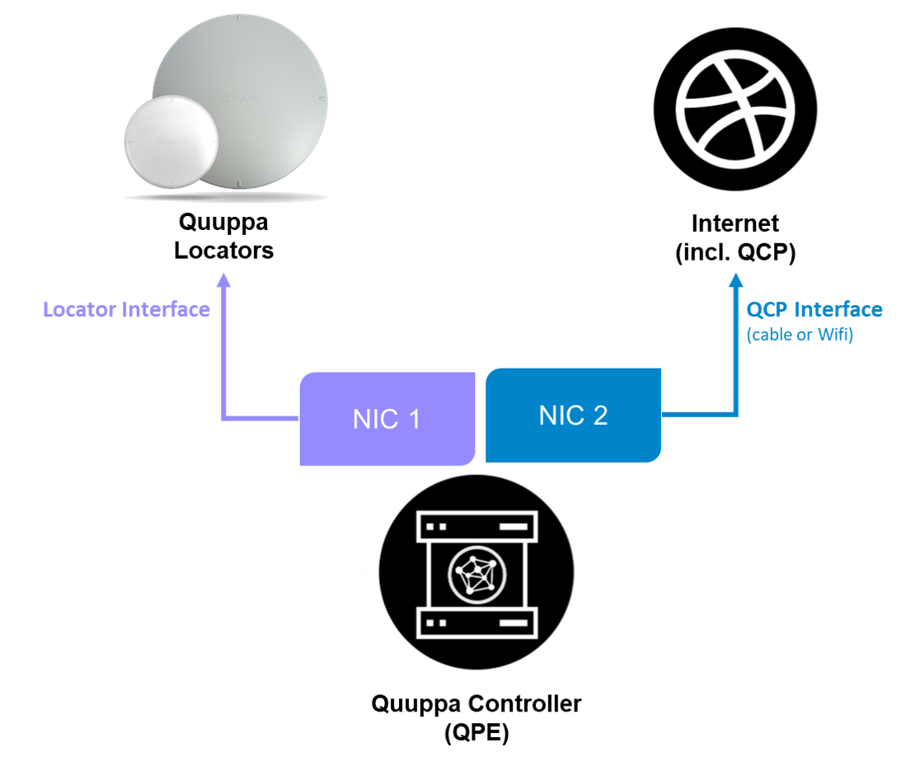

QPE Hardware Recommendations
Selecting the right enterprise-level hardware for running your Quuppa system is an important step in ensuring that the Quuppa Positioning Engine (QPE) can provide the best positioning performance. As Quuppa software is tested most extensively on Linux, we recommend the use of Linux for Quuppa systems wherever possible. To help with the selection of suitable hardware, we have categorised Quuppa systems into three tiers based on typical real world deployment scenarios:
- Low end
- Mid range
- High end
These tiers take into account different factors affecting the network infrastructure and capacity requirements for the system, e.g. the number of UDP packets sent to ensure real-time tracking, the amount of tags being tracked by the system, the selected Locator settings and tag configurations. To ensure best performance, we recommend that you do not run anything else on the same machine.
The table below shows typical hardware requirements for deployments according to the defined tiers.
Tiers and Hardware Specifications
| Tier | Max Incoming Packets/Second | Example Nr. of Tags | Generic Hardware Specification |
|---|---|---|---|
| Low end | 2 000 |
Maximum of 90 moving tags @ 3Hz = 3packets/s or 2800 static tags @ 0.1Hz = 0.1 packet/s |
|
| Mid range | 8000 |
Maximum of 350 moving tags @ 3Hz = 3packets/s or 11000 static tags @ 0.1Hz = 0.1 packet/s |
|
| High end | 1 000 / thread |
350+ moving tags 11000+ static tags |
|
In addition to data capacity, the physical installation environment (i.e. is it at open environment, are there existing telecommunication racks or local server rooms that can be used) will also affect your choice of hardware for running the QPE. For example:
- In environments that have dusty working conditions and modest capacity requirements, you might consider using a rugged industrial PC.
- In mid tier deployments using NUCs and mini PCs, installed in telecommunications racks, is usually the most cost effective solutions, but comes with some capacity limits for the system.
- For high end deployment with high capacity requirements, you should look into high end and rack mountable hardware that could be installed either locally or with a fast and reliable connection to your data warehouse.
Quuppa Controller Interfaces and Connectivity
We recommend that you run the QPE on site and physically close to the Locators. The physical proximity improves system performance because:
- In large deployments, the system can use lots of network bandwidth and so it is best to run the Locators close to the QPE.
- To run the system, the UDP port 22100 needs to be open both ways between the Locator and the QPE. As UDP does not handle network interruptions, it is best to reduce the risk of interruptions by running both at the same site.
- The latency of the positioning estimates provided by the QPE increase with distance from the Locators, and so keeping the QPE close to the Locators is important in order to reduce system latency.
The diagram below shows an example configuration for Quuppa Controller interfaces and connectivity.

Typical Configurations for IP Networking
Locator Interface
Firewalls or others may impair the communication between QPE and Locators. Quuppa Locators communicate to the QPE via UDP data traffic. More information about the Quuppa communication ports can be found in the Communication Ports section of this guide.
QCP Interface
We recommend that the Quuppa Controller connects to the internet using a different NIC to that which is used for communication with the Locators. This connection makes it possible to verify the Quuppa software license from the Quuppa Customer Portal (QCP). It also grants access to the Quuppa Active Remote Monitoring service, configurable by the system admin via the QCP.
Requirements: HTTPS connectivity with port 443 SSL open. The Quuppa SW entities (e.g. the QPE) is a Java application connecting to https://secure.quuppa.com
Internal Connectivity
The Quuppa main console and Quuppa Web APIs can be accessed with the Quuppa Controller locally at http://localhost:8080/qpe. In case the Quuppa Controller is connected to other networks the Quuppa main console and Quuppa Web APIs can be accessed at http://x.x.x.x:8080/qpe where x.x.x.x is the IP address of the particular network interface of the Quuppa Controller.